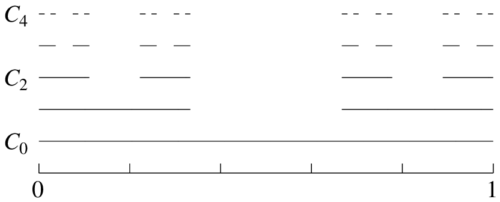
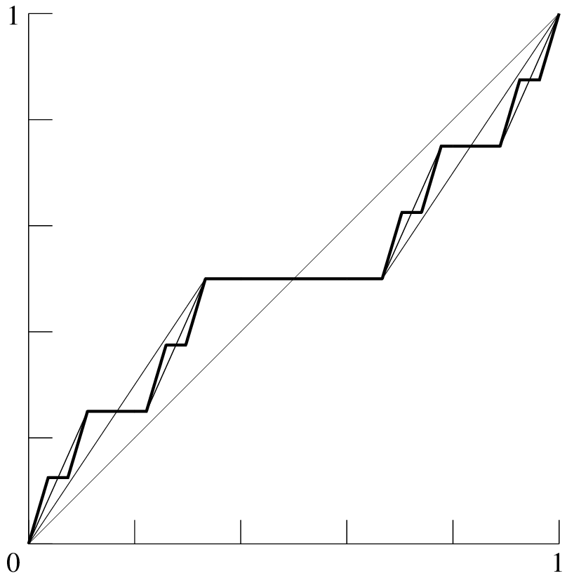
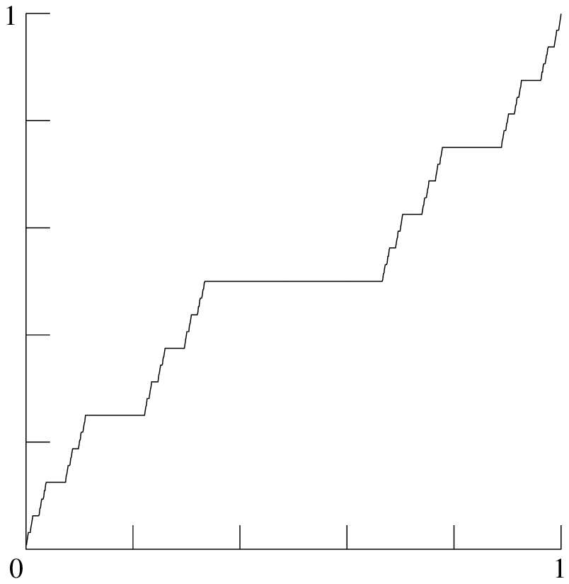

Sifat-sifat khusus ukuran Lebesgue akan mengisi bagian yang cukup besar dari risalah ini. Dalam bagian ini saya menyajikan aneka hasil dasar yang relatif mudah. Dalam 134A-134F, \(r\) akan merupakan suatu bilangan bulat tetap yang lebih besar daripada atau sama dengan \(1\), \(\mu\) akan merupakan ukuran Lebesgue pada \(\BbbR^r\), dan \(\mu^*\) akan merupakan ukuran luar Lebesgue (lihat 132C); ketika saya mengatakan bahwa suatu himpunan atau fungsi ‘terukur’, hendaknya dipahami bahwa (kecuali dinyatakan lain) artinya ‘terukur terhadap aljabar-\(\sigma\) himpunan-himpunan terukur Lebesgue’, sedangkan ‘terabaikan’ berarti ‘terabaikan untuk ukuran Lebesgue’. Sebagian besar hasil akan dinyatakan dalam istilah yang disesuaikan dengan kasus multidimensi; tetapi jika minat utama Anda adalah garis bilangan real, Anda tidak akan kehilangan satu pun gagasan apabila membaca seluruh bagian ini seolah-olah \(r=1\).
134A Proposisi
Baik ukuran luar Lebesgue maupun ukuran Lebesgue invarian terhadap translasi; yaitu, dengan menetapkan \(A+x=\{a+x:a\in A\}\) untuk \(A\subseteq\BbbR^r\), \(x\in\BbbR^r\), kita memiliki
(a) \(\mu^*(A+x)=\mu^* A\) untuk setiap \(A\subseteq\BbbR^r\), \(x\in\BbbR^r\);
(b) jika \(E\subseteq\BbbR^r\) terukur dan \(x\in\BbbR^r\), maka \(E+x\) terukur, dengan \(\mu(E+x)=\mu E\).
134B Teorema
Tidak setiap subhimpunan dari \(\BbbR^r\) terukur Lebesgue.
134C Catatan
134B dikenal sebagai ‘konstruksi Vitali’.
Perhatikan bahwa pada awal pembuktian saya meminta Anda memilih satu anggota dari setiap kelas ekuivalensi untuk \(\sim\). Tentu saja ini merupakan penggunaan Aksioma Pilihan. Sejauh ini saya agak jarang menggunakan aksioma pilihan. Salah satunya terdapat dalam (a-iv) pada pembuktian 114D/115D; penggunaan yang lebih awal terdapat dalam 112Db; dan satu lagi dalam 121A. Lihat juga 1A1F. Dalam semua kasus tersebut, yang terlibat hanya ‘pilihan terhitung’; yaitu, saya perlu memilih secara serentak satu anggota dari setiap himpunan dalam suatu barisan yang telah ditentukan. Karena pasti terdapat tak terhitung banyak kelas ekuivalensi untuk \(\sim\), bentuk pilihan yang diperlukan untuk contoh di atas pada hakikatnya lebih kuat daripada yang diperlukan untuk hasil-hasil positif sejauh ini. Bahkan, bagian yang sangat besar dari teori ukuran dapat dikembangkan tanpa menggunakan kekuatan penuh aksioma pilihan.
Arti penting hal ini ialah bahwa mungkin terdapat suatu sistem matematika konsisten yang mengakui bentuk Aksioma Pilihan yang cukup kuat untuk memungkinkan teori ukuran, tetapi tidak cukup kuat untuk membangun suatu himpunan tak-terukur Lebesgue. Sistem semacam itu memang telah dikembangkan oleh R.M.Solovay (Solovay 70). (Dalam arti formal masih terdapat ruang untuk keraguan tersisa mengenai konsistensinya. Menurut saya, ini tidak penting.) Dalam Jilid 5 saya akan kembali ke pertanyaan mengenai seperti apa ukuran Lebesgue dengan aksioma pilihan yang lemah, atau tanpa aksioma pilihan sama sekali. Untuk saat ini, saya harus mengatakan bahwa hampir seluruh teori ukuran terus berjalan dalam arah yang setidaknya konsisten dengan aksioma pilihan penuh, sehingga himpunan-himpunan tak-terukur senantiasa hadir, setidaknya secara potensial; dan itulah sikap normal saya dalam risalah ini. Namun saya menyebutkan pokok ini pada tahap awal karena saya percaya bahwa sewaktu-waktu pusat perhatian dapat beralih ke sistem-sistem tempat aksioma pilihan tidak berlaku; dalam hal itu teori ukuran tanpa himpunan tak-terukur dapat menjadi penting bagi banyak matematikawan murni, bahkan matematikawan terapan, yang tidak mempunyai alasan untuk setia pada aksioma pilihan selain kemudahan dapat mengutip hasil dari buku-buku seperti ini.
Perlu saya catat bahwa meskipun kita memerlukan bentuk aksioma pilihan yang cukup kuat untuk membangun himpunan tak-terukur Lebesgue, suatu himpunan non-Borel dapat dibangun dalam teori-teori himpunan yang jauh lebih lemah. Salah satu konstruksi yang mungkin diuraikan dalam §423 di Jilid 4.
Tentu saja terdapat subhimpunan tak-terukur Lebesgue dari \(\Bbb R\) jika dan hanya jika terdapat fungsi tak-terukur Lebesgue dari \(\Bbb R\) ke \(\Bbb R\); sebab jika setiap himpunan terukur, definisi 121C memperjelas bahwa setiap fungsi bernilai real pada sembarang subhimpunan dari \(\Bbb R\) terukur; sedangkan jika \(A\subseteq\Bbb R\) tidak terukur, maka \(\chi A:\Bbb R\to\Bbb R\) tidak terukur.
134D
Sebenarnya terdapat hasil-hasil yang jauh lebih kuat daripada 134B mengenai keberadaan himpunan tak-terukur (tentu saja, asalkan kita memperbolehkan diri menggunakan aksioma pilihan). Di sini saya memberikan satu hasil yang dapat dicapai melalui sedikit penyempurnaan metode-metode 134B.
Proposisi Terdapat himpunan \(C\subseteq\BbbR^r\) sedemikian sehingga \(F\cap C\) tidak terukur untuk setiap himpunan terukur \(F\) yang ukurannya tak nol; dengan demikian, baik \(C\) maupun komplemennya berukuran luar penuh dalam \(\BbbR^r\).
Catatan Sebenarnya, untuk setiap barisan \(\sequencen{D_n}\) yang terdiri atas subhimpunan-subhimpunan dari \(\BbbR^r\), terdapat himpunan \(C\subseteq\BbbR^r\) sedemikian sehingga
untuk setiap himpunan terukur \(E\subseteq\BbbR^r\) dan setiap \(n\in\Bbb N\). Namun pembuktian hasil ini harus menunggu Jilid 5.
134E Himpunan Borel dan ukuran Lebesgue pada \(\BbbR^r\)
Ingat dari 111G bahwa keluarga \(\Cal B\) himpunan-himpunan Borel dalam \(\BbbR^r\) adalah aljabar-\(\sigma\) yang dibangkitkan oleh keluarga himpunan-himpunan terbuka. Dalam 114G/115G saya menunjukkan bahwa setiap himpunan Borel dalam \(\BbbR^r\) terukur Lebesgue. Sudah waktunya kita kembali ke topik ini dan melihat lebih dekat hubungan yang sangat erat antara himpunan Borel dan himpunan terukur.
Ingat bahwa suatu himpunan \(A\subseteq\BbbR^r\) disebut berbatas jika terdapat suatu \(M\) sedemikian sehingga \(A\subseteq B(\tbf{0},M)=\{x:\|x\|\le M\}\); secara ekuivalen, jika \(\sup_{x\in A}|\xi_j|<\infty\) untuk setiap \(j\le r\) (dengan menuliskan \(x=(\xi_1,\ldots,\xi_r)\), seperti dalam §115).
134F Proposisi
(a) Jika \(A\subseteq\BbbR^r\) sembarang himpunan, maka
(b) Jika \(E\subseteq\BbbR^r\) terukur, maka
dan terdapat himpunan-himpunan Borel \(H_1\), \(H_2\) sedemikian sehingga \(H_1\subseteq E\subseteq H_2\) dan
(c) Jika \(A\subseteq\BbbR^r\) sembarang himpunan, maka \(A\) memiliki suatu selubung terukur yang merupakan himpunan Borel.
(d) Jika \(f\) adalah fungsi bernilai real terukur Lebesgue yang didefinisikan pada suatu subhimpunan dari \(\BbbR^r\), maka terdapat himpunan Borel koterabaikan \(H\subseteq\BbbR^r\) sedemikian sehingga \(f\restr H\) terukur Borel.
Catatan Penekanan pada himpunan tertutup berbatas dalam bagian (b) proposisi ini disebabkan oleh sifat-sifat topologisnya yang penting, khususnya fakta bahwa himpunan-himpunan tersebut ‘kompak’. Ini merupakan salah satu fakta terpenting tentang ukuran Lebesgue, sebagaimana akan tampak dalam Jilid 4. Saya akan membahas ‘kekompakan’ secara singkat dalam §2A2 di Jilid 2.
134G Himpunan Cantor
Salah satu tujuan teori ukuran dan integral Lebesgue adalah mempelajari himpunan dan fungsi yang lebih tak beraturan daripada yang dapat ditangani dengan metode-metode yang lebih primitif. Dalam beberapa paragraf berikut saya membahas himpunan dan fungsi terukur yang, dari sudut pandang teori saat ini, dapat ditangani tanpa menjadi sepele. Mulai sekarang, \(\mu\) akan merupakan ukuran Lebesgue pada \(\Bbb R\).
(a) ‘Himpunan Cantor’ \(C\subseteq[0,1]\) didefinisikan sebagai irisan barisan himpunan \(\sequencen{C_n}\), yang dibangun sebagai berikut. \(C_0=[0,1]\). Andaikan \(C_n\) terdiri atas \(2^n\) interval tertutup yang saling lepas, masing-masing panjangnya \(3^{-n}\); ambil setiap interval ini dan hapus sepertiga tengahnya sehingga menghasilkan dua interval tertutup yang masing-masing panjangnya \(3^{-n-1}\); ambil \(C_{n+1}\) sebagai gabungan \(2^{n+1}\) interval tertutup yang terbentuk demikian, lalu lanjutkan. Perhatikan bahwa \(\mu C_n=({2\over 3})^n\) untuk setiap \(n\).

Himpunan Cantor adalah \(C=\bigcap_{n\in\Bbb N}C_n\). Ukurannya adalah
134Gb (b)
Setiap \(C_n\) juga dapat digambarkan sebagai himpunan bilangan real yang dapat dinyatakan sebagai \(\sum_{j=1}^{\infty}3^{-j}\epsilon_j\), dengan setiap \(\epsilon_j\) bernilai \(0\), \(1\), atau \(2\), dan \(\epsilon_j\ne 1\) untuk \(j\le n\). Akibatnya, \(C\) sendiri adalah himpunan bilangan yang dapat dinyatakan sebagai \(\sum_{j=1}^{\infty}3^{-j}\epsilon_j\), dengan setiap \(\epsilon_j\) bernilai \(0\) atau \(2\); yaitu, himpunan bilangan antara \(0\) dan \(1\) yang dapat dinyatakan dalam bentuk terner tanpa angka 1. Representasi dalam setiap kasus bersifat unik, sehingga kita memiliki bijeksi \(\phi:\{0,1\}^{\Bbb N}\to C\) yang didefinisikan dengan menuliskan
untuk setiap \(z\in\{0,1\}^{\Bbb N}\).
134H Fungsi Cantor
Melanjutkan dari 134G, kita memperoleh konstruksi berikut.
(a) Untuk setiap \(n\in\Bbb N\) kita mendefinisikan fungsi \(f_n:[0,1]\to[0,1]\) dengan menetapkan
untuk setiap \(x\in [0,1]\). Karena \(C_n\) hanyalah suatu gabungan berhingga interval, \(f_n\) merupakan fungsi poligonal, dengan \(f_n(0)=0\), \(f_n(1)=1\); \(f_n\) konstan pada masing-masing dari \(2^n-1\) interval terbuka penyusun \([0,1]\setminus C_n\), dan naik dengan kemiringan \(({3\over 2})^n\) pada masing-masing dari \(2^n\) interval tertutup penyusun \(C_n\).

Jika interval ke-\(j\) dari \(C_n\), dihitung dari kiri, adalah \([a_{nj},b_{nj}]\), maka \(f_n(a_{nj})=2^{-n}(j-1)\) dan \(f_n(b_{nj})=2^{-n}j\). Selain itu, \(a_{nj}=a_{n+1,2j-1}\) dan \(b_{nj}=b_{n+1,2j}\); dengan demikian, atau melalui cara lain, \(f_{n+1}(a_{nj})=f_n(a_{nj})\) dan \(f_{n+1}(b_{nj})=f_{n}(b_{nj})\), dan \(f_{n+1}\) berimpit dengan \(f_n\) pada semua titik ujung interval-interval \(C_n\), dan karenanya pada \([0,1]\setminus C_n\).
Di dalam setiap interval tertentu \([a_{nj},b_{nj}]\) dari \(C_n\), selisih terbesar antara \(f_n(x)\) dan \(f_{n+1}(x)\) terjadi pada titik-titik ujung baru di dalam interval tersebut, yaitu \(b_{n+1,2j-1}\) dan \(a_{n+1,2j}\); dan besar selisihnya adalah \({1\over 6}2^{-n}\) (sebab, misalnya, \(f_n(b_{n+1,2j-1})={2\over 3}f_n(a_{nj})+{1\over 3}f_n(b_{nj})\), sedangkan \(f_{n+1}(b_{n+1,2j-1})={1\over 2}f_n(a_{nj})+{1\over 2}f_n(b_{nj})\)). Dengan demikian kita memiliki \(|f_{n+1}(x)-f_n(x)|\le{1\over 6}2^{-n}\) untuk setiap \(n\in\Bbb N\), \(x\in[0,1]\). Karena \(\sum_{n=0}^{\infty}{1\over 6}2^{-n}<\infty\),
\(\sequencen{f_n}\) konvergen seragam menuju suatu fungsi \(f:[0,1]\to[0,1]\), dan \(f\) kontinu. \(f\) adalah fungsi Cantor atau Tangga Setan.

134Hb (b)
Karena setiap \(f_n\) tak-menurun, \(f\) juga demikian. Jika \(x\in[0,1]\setminus C\), terdapat suatu \(n\) sedemikian sehingga \(x\in[0,1]\setminus C_n\); misalkan \(I\) interval terbuka dari \([0,1]\setminus C_n\) yang memuat \(x\); maka \(f_{m+1}\) berimpit pada \(I\) dengan \(f_m\) untuk setiap \(m\ge n\), sehingga \(f\) berimpit pada \(I\) dengan \(f_n\), dan \(f\) konstan pada \(I\). Dengan demikian, khususnya, turunan \(f'(x)\) ada dan bernilai \(0\) untuk setiap \(x\in[0,1]\setminus C\); sehingga \(f'\) bernilai nol hampir di mana-mana dalam \([0,1]\). Tentu saja, \(f(0)=0\) dan \(f(1)=1\), karena \(f_n(0)=0\), \(f_n(1)=1\) untuk setiap \(n\). Akibatnya, \(f:[0,1]\to[0,1]\) surjektif (menurut Teorema Nilai Antara).
134Hc (c)
Misalkan \(\phi:\{0,1\}^{\Bbb N}\to C\) adalah fungsi yang dijelaskan dalam 134Gb. Maka \(f(\phi(z))=\bover12\sum_{j=0}^{\infty}2^{-j}z(j)\) untuk setiap \(z\in\{0,1\}^{\Bbb N}\). Bukti. Tetapkan \(z=(\zeta_0,\zeta_1,\zeta_2,\ldots)\) dalam \(\{0,1\}^{\Bbb N}\), dan untuk setiap \(n\) ambil \(I_n\) sebagai interval komponen \(C_n\) yang memuat \(\phi(z)\). Maka \(I_{n+1}\) merupakan sepertiga kiri \(I_n\) jika \(\zeta_n=0\), dan sepertiga kanannya jika \(\zeta_n=1\). Dengan mengambil \(a_n\) sebagai titik ujung kiri \(I_n\), kita melihat bahwa \(a_{n+1}=a_n+\Bover233^{-n}\zeta_n\), \(f_{n+1}(a_{n+1})=f_n(a_n)+\Bover122^{-n}\zeta_n\) untuk setiap \(n\). Sekarang \(\phi(z)=\lim_{n\to\infty}a_n\), \(f(\phi(z))=\lim_{n\to\infty}f(a_n)=\lim_{n\to\infty}f_n(a_n) =\Bover12\sum_{j=0}^{\infty}2^{-j}\zeta_j\), seperti yang dinyatakan. ∎
Khususnya, \(f[C]=[0,1]\). Bukti. Setiap \(x\in[0,1]\) dapat dinyatakan sebagai \(\sum_{j=0}^{\infty}2^{-j-1}z(j)=f(\phi(z))\) untuk suatu \(z\in\{0,1\}^{\Bbb N}\). ∎
134I Fungsi Cantor yang dimodifikasi
Saya melanjutkan argumen 134G-134H.
(a) Tinjau rumus
dengan \(f\) fungsi Cantor, sebagaimana didefinisikan dalam 134H; rumus ini mendefinisikan suatu fungsi kontinu \(g:[0,1]\to[0,1]\) yang naik ketat (karena \(f\) tak-menurun) serta memenuhi \(g(0)=0\), \(g(1)=1\); akibatnya, menurut Teorema Nilai Antara, \(g\) bijektif, dan inversnya \(g^{-1}:[0,1]\to[0,1]\) kontinu.
Sekarang \(g[C]\) merupakan himpunan tertutup dan \(\mu g[C]=\bover12\). Bukti. Karena \(g\) merupakan permutasi titik-titik \([0,1]\), \([0,1]\setminus g[C]=g[\,[0,1]\setminus C]\). Untuk setiap interval terbuka \(I_{nj}=\ooint{b_{nj},a_{n,j+1}}\) yang menyusun \([0,1]\setminus C_n\), kita melihat bahwa \(g[I_{nj}]=\ooint{g(b_{nj}),g(a_{n,j+1})}\) memiliki panjang tepat separuh panjang \(I_{nj}\). Akibatnya \(g[\,[0,1]\setminus C]=\bigcup_{n\ge 1,1\le j<2^n}g[I_{nj}]\) terbuka, dan \[\begin{aligned}\mu(g[\,[0,1]\setminus C_n]) &=\sum_{j=1}^{2^n-1}g(a_{n,j+1})-g(b_{nj}) =\Bover12\sum_{j=1}^{2^n-1}a_{n,j+1}-b_{nj}\\ &=\Bover12\mu([0,1]\setminus C_n) =\Bover12(1-(\Bover23)^n)\\\end{aligned}\] (134Ga). Karena \(\sequencen{[0,1]\setminus C_n}\) merupakan barisan himpunan menaik dengan gabungan \([0,1]\setminus C\), \(\mu g([\,[0,1]\setminus C]) =\lim_{n\to\infty}\mu g([\,[0,1]\setminus C_n]) =\Bover12\). Jadi \(g[C]=[0,1]\setminus g[\,[0,1]\setminus C]\) tertutup dan \(\mu g[C]=\bover12\). ∎
134Ib (b)
Menurut 134D terdapat suatu himpunan \(D\subseteq\Bbb R\) sedemikian sehingga
tetapkan \(A=g[C]\cap D\). Tentu saja \(A\) tidak mungkin terukur, karena \(\mu^*A+\mu^*(g[C]\setminus A)>\mu g[C]\). Namun, \(g^{-1}[A]\subseteq C\) harus terukur, karena \(\mu^*C=0\). Ini berarti bahwa jika kita menetapkan \(h=\chi(g^{-1}[A]):[0,1]\to\Bbb R\), maka \(h\) terukur; tetapi \(hg^{-1}\mskip5mu =\chi A:[0,1]\to\Bbb R\) tidak terukur.
Jadi, komposisi suatu fungsi terukur dengan fungsi kontinu tidak harus terukur. Bandingkan ini dengan 121Eg.
134J Contoh-contoh lain
Menurut saya, ada baiknya menyediakan ruang untuk menguraikan secara terperinci dua contoh dasar lain mengenai himpunan-himpunan terukur Lebesgue.
(a) Sebagaimana telah diamati dalam 114G, setiap subhimpunan terhitung dari \(\Bbb R\) terabaikan. Khususnya, \(\Bbb Q\) terabaikan (111Eb). Kita dapat mengatakan lebih jauh. Misalkan \(\sequencen{q_n}\) suatu barisan yang menjangkau \(\Bbb Q\), dan untuk setiap \(n\in\Bbb N\) tetapkan
Maka \(G_n\) merupakan himpunan terbuka berukuran paling besar \(\sum_{k=n}^{\infty}2\cdot 2^{-k}=4\cdot 2^{-n}\), dan memuat semua titik \(\Bbb Q\) kecuali sejumlah berhingga, sehingga rapat (yaitu, beririsan dengan setiap interval tak-sepele). Tetapkan \(F_n=\Bbb R\setminus G_n\); maka \(F_n\) tertutup, \(\mu(\Bbb R\setminus F_n)\le 4/2^n\), tetapi \(F_n\) tidak memuat satu pun \(q_k\) dengan \(k\ge n\), sehingga \(F_n\) tidak mungkin memuat interval tak-sepele apa pun. Perhatikan bahwa \(\sequencen{G_n}\) tak-menaik, sehingga \(\sequencen{F_n}\) tak-menurun.
134Jb (b)
Kita dapat mengembangkan konstruksi di atas sebagai berikut. Terdapat suatu himpunan terukur \(E\subseteq\Bbb R\) sedemikian sehingga \(\mu(I\cap E)>0\) dan \(\mu(I\setminus E)>0\) untuk setiap interval tak-sepele \(I\subseteq\Bbb R\). Bukti. Pertama-tama perhatikan bahwa jika \(k\), \(n\in\Bbb N\), terdapat \(j\ge n\) sedemikian sehingga \(q_j\in I_k\), sehingga \(I_k\cap I_j\ne\emptyset\) dan \(\mu(I_k\setminus F_n)>0\). Sekarang pasti terdapat suatu \(l>n\) sedemikian sehingga \(\mu G_l<\mu(I_k\setminus F_n)\), sehingga \(\mu(I_k\cap F_l\setminus F_n) =\mu((I_k\setminus F_n)\setminus G_l)>0\). Pilih \(n_0<n_1<n_2<\ldots\) sebagai berikut. Mulailah dengan \(n_0=0\). Jika \(n_{2k}\) telah diberikan, dengan \(k\in\Bbb N\), pilih \(n_{2k+1}\), \(n_{2k+2}\) sedemikian sehingga \(\mu(I_k\cap F_{n_{2k+1}}\setminus F_{n_{2k}})>0,\quad \mu(I_k\cap F_{n_{2k+2}}\setminus F_{n_{2k+1}})>0\). Lanjutkan. Setelah induksi selesai, tetapkan \(E=\bigcup_{k\in\Bbb N}F_{n_{2k+1}}\setminus F_{n_{2k}}\), \(H=\bigcup_{k\in\Bbb N}F_{n_{2k+2}}\setminus F_{n_{2k+1}}\). Karena \(\sequence{k}{F_k}\) tak-menurun, \(E\cap H=\emptyset\). Jika \(k\in\Bbb N\), \(E\cap I_k\) dan \(H\cap I_k\) keduanya mempunyai ukuran positif. Sekarang andaikan \(I\subseteq\Bbb R\) suatu interval dengan lebih dari satu titik; andaikan \(a\), \(b\in I\) dan \(a<b\). Maka terdapat \(m\in\Bbb N\) sedemikian sehingga \(4\cdot 2^{-m}\le b-a\); sekarang terdapat suatu \(k\ge m\) sedemikian sehingga \(q_k\in[a+2^{-m},b-2^{-m}]\), sehingga \(I_k\subseteq I\) dan \(\mu(I\cap E)\ge\mu(E\cap I_k)>0\), \(\mu(I\setminus E)\ge\mu(H\cap I_k)>0\). ∎
134Jc (c)
Ini menunjukkan bahwa \(E\) dan komplemennya adalah himpunan-himpunan terukur yang bukan sekadar sama-sama rapat (seperti \(\Bbb Q\) dan \(\Bbb R\setminus\Bbb Q\)), melainkan rapat ‘secara esensial’ dalam arti bahwa keduanya beririsan dengan setiap interval terbuka tak-kosong dalam suatu himpunan berukuran positif, sehingga (misalnya) \(E\setminus A\) rapat untuk setiap himpunan terabaikan \(A\).
134K Integral Riemann
Dalam menulis buku ini, saya telah berusaha mengandaikan sesedikit mungkin pengetahuan sebelumnya. Khususnya, Anda tidak perlu telah mempelajari integral Riemann. Namun demikian, jika Anda telah mempelajari teori dasar integral Riemann — yang sesungguhnya bukan hanya latihan sangat baik dalam teknik analisis \(\epsilon\)-\(\delta\), melainkan juga sumber gagasan yang terus-menerus bagi bidang ini — saya harap Anda ingin menghubungkannya dengan materi yang sedang kita pelajari; baik karena Anda tidak ingin merasa bahwa jerih payah Anda sia-sia, maupun karena Anda barangkali telah mengembangkan sejumlah intuisi yang akan tetap berharga apabila disesuaikan dengan tepat pada konteks baru. Oleh karena itu, saya memberikan uraian singkat mengenai hubungan antara metode integral Riemann dan Lebesgue pada garis bilangan real.
(a) Ada banyak cara untuk menggambarkan integral Riemann; saya memilih salah satu yang populer. Jika \([a,b]\) adalah interval tertutup tak-sepele dalam \(\Bbb R\), saya mengatakan bahwa suatu pembagian atas \([a,b]\) adalah daftar berhingga \(D=(a_0,a_1,\ldots,a_n)\), dengan \(n\ge 1\), sedemikian sehingga \(a=a_0<a_1<\ldots< a_n=b\). Jika sekarang \(f\) merupakan fungsi bernilai real yang didefinisikan (setidaknya) pada \([a,b]\) dan berbatas pada \([a,b]\), jumlah atas dan jumlah bawah dari \(f\) pada \([a,b]\) yang diturunkan dari \(D\) adalah
Anda perlu membuktikan bahwa jika \(D\) dan \(D'\) merupakan dua pembagian atas \([a,b]\), maka \(s_D(f)\le S_{D'}(f)\). Sekarang definisikan integral Riemann atas dan integral Riemann bawah dari \(f\) sebagai
Periksa bahwa \(L_{[a,b]}(f)\) pasti lebih kecil daripada atau sama dengan \(U_{[a,b]}(f)\). Akhirnya, nyatakan \(f\) terintegralkan Riemann pada \([a,b]\) jika \(U_{[a,b]}(f)=L_{[a,b]}(f)\), dan dalam kasus ini ambil nilai bersama tersebut sebagai integral Riemann \(\Rint_a^bf\) dari \(f\) pada \([a,b]\).
134Kb (b)
Jika \(f:[a,b]\to\Bbb R\) terintegralkan Riemann, maka fungsi tersebut terintegralkan Lebesgue, dengan integral yang sama. Bukti. Untuk setiap pembagian \(D=(a_0,\ldots,a_n)\) atas \([a,b]\), definisikan \(g_D\), \(h_D:[a,b]\to\Bbb R\) dengan menetapkan \(g_D(x)=\inf\{f(y):y\in\ooint{a_{i-1},a_i}\}\) jika \(a_{i-1}<x<a_i\), \(g_D(a_i)=f(a_i)\) untuk setiap \(i\), \(h_D(x)=\sup\{f(y):y\in\ooint{a_{i-1},a_i}\}\) jika \(a_{i-1}<x<a_i\), \(h_D(a_i)=f(a_i)\) untuk setiap \(i\). Maka \(g_D\) dan \(h_D\) konstan pada setiap interval \(\ooint{a_{i-1},a_i}\), sehingga semua himpunan \(\{x:g_D(x)\le c\}\), \(\{x:h_D(x)\le c\}\) merupakan gabungan berhingga interval-interval, dan \(g_D\) serta \(h_D\) terukur; selain itu, \(\int g_Dd\mu =s_D(f)\), \(\int h_Dd\mu=S_D(f)\). Akibatnya, \[\begin{aligned}\Rint_a^bf=L_{[a,b]}(f)&=\sup_D\int g_Dd\mu \le\underline{\int}fd\mu\\ &\le\overline{\int}fd\mu \le\inf_D\int h_Dd\mu=U_{[a,b]}(f)=\Rint_a^bf,\\\end{aligned}\] dan \(\overline{\int}fd\mu=\underline{\int}fd\mu=\Rint_a^bf\), sehingga \(\int fd\mu\) ada dan sama dengan \(\Rint_a^bf\) (133Jd). ∎
134Kc (c)
Pembahasan di atas menyangkut integral Riemann ‘wajar’, untuk fungsi berbatas pada interval berbatas. Untuk fungsi tak-berbatas dan interval tak-berbatas, digunakan berbagai bentuk integral ‘tak wajar’; misalnya, integral Riemann tak wajar \(\int_0^{\infty}\bover{\sin x}{x}dx\) diambil sebagai \(\lim_{a\to\infty}\int_0^a\bover{\sin x}{x}dx\), sedangkan \(\int_0^1\ln x\,dx\) diambil sebagai \(\lim_{a\downarrow 0}\int_a^1\ln x\,dx\). Di antara keduanya, integral kedua ada sebagai integral Lebesgue, tetapi yang pertama tidak, karena \(\int_0^{\infty}|\bover{\sin x}{x}|dx=\infty\). Kemampuan integral Lebesgue untuk menangani secara langsung fungsi tak-berbatas ‘terintegralkan secara mutlak’ pada domain tak-berbatas berarti bahwa fungsi yang dapat disebut ‘terintegralkan secara bersyarat’ terdorong ke latar belakang teori. Dalam Bab 48 Jilid 4 saya akan membahas teori umum fungsi-fungsi semacam itu, tetapi untuk sementara waktu saya akan menanganinya satu per satu pada kesempatan langka ketika fungsi tersebut muncul.
134L
Sebenarnya terdapat suatu karakterisasi indah bagi fungsi-fungsi terintegralkan Riemann, sebagai berikut.
Proposisi Jika \(a<b\) dalam \(\Bbb R\), suatu fungsi berbatas \(f:[a,b]\to\Bbb R\) terintegralkan Riemann jika dan hanya jika kontinu hampir di mana-mana dalam \([a,b]\).
Latihan
134X Latihan dasar \(\pmb{>}\)(a) penting
Tunjukkan bahwa jika \(f\) merupakan fungsi bernilai real terintegralkan pada \(\BbbR^r\), maka \(\int f(x+a)dx\) ada dan sama dengan \(\int f\) untuk setiap \(a\in\BbbR^r\). Petunjuk: mulailah dengan fungsi sederhana \(f\).
134Xb (b)
Secara lebih umum, tunjukkan bahwa jika \(E\subseteq\BbbR^r\) terukur dan \(f\) merupakan fungsi bernilai real yang terintegralkan pada \(E\) dalam arti 131D, maka \(\int_{E-a}f(x+a)dx\) ada dan sama dengan \(\int_Ef\) untuk setiap \(a\in\BbbR^r\).
134Xc (c)
Tunjukkan bahwa jika \(C\subseteq\Bbb R\) sembarang himpunan tak-terabaikan, maka himpunan tersebut memiliki suatu subhimpunan tak-terukur. Petunjuk: gunakan metode 134B, dengan mengambil relasi \(\sim\) pada subhimpunan berbatas yang sesuai dari \(C\) sebagai pengganti \(\coint{\tbf{0},\tbf{1}}\).
134Xd (>d) penting
Misalkan \(\nu_g\) suatu ukuran Lebesgue–Stieltjes pada \(\Bbb R\), yang dibangun seperti dalam 114Xa dari fungsi tak-menurun \(g:\Bbb R\to\Bbb R\), dan \(\Sigma_g\) domainnya. (Lihat juga 132Xg.) Tunjukkan bahwa
(i) jika \(A\subseteq\Bbb R\) sembarang himpunan, maka
\[\begin{aligned}\nu_g^*A&=\inf\{\nu_g G:G\text{ terbuka},\,G\supseteq A\}\\ &=\min\{\nu_g H:H\text{ Borel},\,H\supseteq A\};\\\end{aligned}\]
(ii) jika \(E\in\Sigma_g\), maka
dan terdapat himpunan-himpunan Borel \(H_1\), \(H_2\) sedemikian sehingga \(H_1\subseteq E\subseteq H_2\) dan \(\nu_g(H_2\setminus H_1)=\nu_g(H_2\setminus E)=\nu_g(E\setminus H_1)=0\);
(iii) jika \(A\subseteq\Bbb R\) sembarang himpunan, maka \(A\) memiliki suatu selubung terukur yang merupakan himpunan Borel;
(iv) jika \(f\) adalah fungsi bernilai real \(\Sigma_g\)-terukur yang didefinisikan pada suatu subhimpunan dari \(\Bbb R\), maka terdapat himpunan Borel \(\nu_g\)-koterabaikan \(H\subseteq\Bbb R\) sedemikian sehingga \(f\restr H\) terukur Borel.
134Xe (e)
Misalkan \(E\subseteq\BbbR^r\) suatu himpunan terukur, dan \(\epsilon>0\). (i) Tunjukkan bahwa terdapat suatu himpunan terbuka \(G\supseteq E\) sedemikian sehingga \(\mu(G\setminus E)\le\epsilon\). Petunjuk: terapkan 134Fa pada setiap himpunan \(E\cap B(\tbf{0},n)\). (ii) Tunjukkan bahwa terdapat suatu himpunan tertutup \(F\subseteq E\) sedemikian sehingga \(\mu(E\setminus F)\le\epsilon\).
134Xf (f)
Misalkan \(C\subseteq[0,1]\) himpunan Cantor. Tunjukkan bahwa \(\{x+y:x\), \(y\in C\}=[0,2]\) dan \(\{x-y:x\), \(y\in C\}=[-1,1]\).
134Xg (g)
Misalkan \(f\), \(g\) fungsi-fungsi dari \(\Bbb R\) ke dirinya sendiri. Tunjukkan bahwa (i) jika \(f\) dan \(g\) keduanya terukur Borel, maka komposisinya \(fg\) juga demikian (ii) jika \(f\) terukur Borel dan \(g\) terukur Lebesgue, maka \(fg\) terukur Lebesgue (iii) jika \(f\) terukur Lebesgue dan \(g\) terukur Borel, maka \(fg\) tidak harus terukur Lebesgue.
134Xh (h)
Tunjukkan bahwa untuk setiap bilangan bulat \(r\ge 1\) terdapat suatu himpunan terukur \(E\subseteq\BbbR^r\) sedemikian sehingga \(E\) dan \(\BbbR^r\setminus E\) keduanya beririsan dengan setiap interval terbuka tak-kosong dalam suatu himpunan berukuran positif.
134Xi (i)
Bekali \([0,1]\) dengan ukuran subruangnya. (i) Tunjukkan bahwa terdapat suatu barisan saling lepas \(\sequencen{A_n}\) yang terdiri atas subhimpunan-subhimpunan dari \([0,1]\) yang semuanya berukuran luar \(1\). (ii) Tunjukkan bahwa terdapat suatu fungsi \(f:[0,1]\to\ooint{0,1}\) sedemikian sehingga \(\underline{\int}f=0\) dan \(\overline{\int}f=1\).
134Xj (j)
Misalkan \(f\) suatu fungsi real terukur dan \(g\) suatu fungsi real sedemikian sehingga \(\dom g\setminus\dom f\) dan \(\{x:x\in\dom g\cap\dom f\), \(g(x)\ne f(x)\}\) keduanya terabaikan. Tunjukkan bahwa \(g\) terukur.
134Y Latihan lanjutan (a)
Tetapkan \(c>0\). Untuk \(A\subseteq\BbbR^r\) tetapkan \(cA=\{cx:x\in A\}\). (i) Tunjukkan bahwa \(\mu^*(cA)=c^r\mu^*A\) untuk setiap \(A\subseteq\BbbR^r\). (ii) Tunjukkan bahwa \(cE\) terukur untuk setiap \(E\subseteq\BbbR^r\) terukur.
134Yb (b)
Misalkan \(\langle f_{mn}\rangle_{m,n\in\Bbb N}\), \(\sequence{m}{f_m}\), \(f\) merupakan fungsi-fungsi terukur bernilai real yang didefinisikan hampir di mana-mana dalam \(\BbbR^r\) dan sedemikian sehingga \(f_m\eae\lim_{n\to\infty}f_{mn}\) untuk setiap \(m\) dan \(f\eae\lim_{m\to\infty}f_m\). Tunjukkan bahwa terdapat suatu barisan \(\sequence{k}{n_k}\) sedemikian sehingga \(f\eae\lim_{k\to\infty}f_{k,n_k}\). Petunjuk: ambil \(n_k\) sedemikian sehingga ukuran \(\{x:\|x\|\le k,\,|f_k(x)-f_{k,n_k}(x)|\ge 2^{-k}\}\) paling besar \(2^{-k}\) untuk setiap \(k\).
134Yc (c)
Misalkan \(f\) suatu fungsi bernilai real terukur yang didefinisikan hampir di mana-mana dalam \(\BbbR^r\). Tunjukkan bahwa terdapat suatu barisan \(\sequencen{f_n}\) fungsi-fungsi kontinu yang konvergen menuju \(f\) hampir di mana-mana. Petunjuk: Tangani secara berturut-turut kasus-kasus (i) \(f=\chi I\) dengan \(I\) suatu interval setengah terbuka (ii) \(f=\chi(\bigcup_{j\le n}I_j)\) dengan \(I_0,\ldots,I_n\) interval-interval setengah terbuka yang saling lepas (iii) \(f=\chi E\) dengan \(E\) suatu himpunan terukur berukuran berhingga (iv) \(f\) suatu fungsi sederhana (v) \(f\) umum, dengan menggunakan 134Yb pada langkah (iii) dan (v).
134Yd (d)
Misalkan \(f\) suatu fungsi bernilai real yang didefinisikan pada suatu subhimpunan dari \(\BbbR^r\). Tunjukkan bahwa pernyataan-pernyataan berikut ekuivalen: (i) \(f\) terukur (ii) jika \(E\subseteq\BbbR^r\) terukur dan \(\mu E>0\), terdapat himpunan terukur \(F\subseteq E\) sedemikian sehingga \(\mu F>0\) dan \(f\restr F\) kontinu (iii) jika \(E\subseteq\BbbR^r\) terukur dan \(\gamma<\mu E\), terdapat suatu \(F\subseteq E\) terukur sedemikian sehingga \(\mu F\ge\gamma\) dan \(f\restr F\) kontinu. Petunjuk: untuk (i)\(\Rightarrow\)(iii), gunakan 134Yc dan 131Ya; untuk (ii)\(\Rightarrow\)(i) gunakan 121D. Ini merupakan suatu versi teorema Lusin.
134Ye (e)
Misalkan \(\nu\) suatu ukuran pada \(\Bbb R\) yang invarian terhadap translasi dalam arti 134Ab, dan sedemikian sehingga \(\nu[0,1]\) terdefinisi dan sama dengan \(1\). Tunjukkan bahwa \(\nu\) berimpit dengan ukuran Lebesgue pada himpunan-himpunan Borel dalam \(\Bbb R\). Petunjuk: Tunjukkan terlebih dahulu bahwa \([a,1]\) termasuk dalam domain \(\nu\) untuk setiap \(a\in[0,1]\), dan karenanya bahwa setiap interval setengah terbuka dengan panjang paling besar \(1\) termasuk dalam domain \(\nu\); tunjukkan bahwa \(\nu\coint{a,a+2^{-n}}=2^{-n}\) untuk setiap \(a\in\Bbb R\), \(n\in\Bbb N\), dan karenanya bahwa \(\nu\coint{a,b}=b-a\) setiap kali \(a<b\).
134Yf (f)
Misalkan \(\nu\) suatu ukuran pada \(\BbbR^r\) yang invarian terhadap translasi dalam arti 134Ab, dengan \(r>1\), dan sedemikian sehingga \(\nu[\tbf{0},\tbf{1}]\) terdefinisi dan sama dengan \(1\). Tunjukkan bahwa \(\nu\) berimpit dengan ukuran Lebesgue pada himpunan-himpunan Borel dalam \(\BbbR^r\).
134Yg (g)
Tunjukkan bahwa jika \(f\) sembarang fungsi bernilai real yang terintegralkan pada \(\Bbb R\), dan \(\epsilon>0\), terdapat suatu fungsi kontinu \(g:\Bbb R\to\Bbb R\) sedemikian sehingga \(\{x:g(x)\ne 0\}\) berbatas dan \(\int|f-g|\le\epsilon\). Petunjuk: tunjukkan bahwa himpunan \(\Phi\) dari fungsi-fungsi \(f\) dengan sifat ini memenuhi syarat-syarat 122Yb.
134Yh (h)
Ulangi 134Yg untuk fungsi-fungsi bernilai real yang terintegralkan pada \(\BbbR^r\), dengan \(r>1\).
134Yi (i)
Ulangi 134Fd, 134Xa, 134Xb, 134Yb, 134Yc, 134Yd, 134Yg dan 134Yh untuk fungsi-fungsi bernilai kompleks.
134Yj (j)
Tunjukkan bahwa jika \(G\subseteq\BbbR^r\) terbuka dan tak-kosong, maka himpunan tersebut dapat dinyatakan sebagai gabungan saling lepas suatu barisan interval setengah terbuka yang masing-masing berbentuk \(\{x:2^{-m}n_i\le\xi_i<2^{-m}(n_i+1)\) untuk setiap \(i\le r\}\), dengan \(m\in\Bbb N\), \(n_1,\ldots,n_r\in\Bbb Z\).
134Yk (k)
Tunjukkan bahwa suatu himpunan \(E\subseteq\BbbR^r\) terabaikan Lebesgue jika dan hanya jika terdapat suatu barisan \(\sequencen{C_n}\) hiperkubus-hiperkubus dalam \(\BbbR^r\) sedemikian sehingga \(E\subseteq\bigcap_{n\in\Bbb N}\bigcup_{k\ge n}C_k\) dan \(\sum_{k=0}^{\infty}(\diam C_k)^r<\infty\), dengan menuliskan \(\diam C_k\) untuk diameter \(C_k\).
134Yl (l)
Tunjukkan bahwa terdapat suatu fungsi kontinu \(f:[0,1]\to[0,1]^2\) sedemikian sehingga \(\mu_1f^{-1}[E]=\mu_2E\) untuk setiap \(E\subseteq[0,1]^2\) terukur, dengan menuliskan \(\mu_1\), \(\mu_2\) untuk ukuran Lebesgue masing-masing pada \(\Bbb R\), \(\BbbR^2\). Petunjuk: untuk setiap \(n\in\Bbb N\), nyatakan \([0,1]^2\) sebagai gabungan \(4^n\) persegi tertutup yang panjang sisinya \(2^{-n}\); sebut himpunan persegi-persegi ini \(\Cal D_n\). Bangun fungsi-fungsi kontinu \(f_n:[0,1]\to[0,1]^2\) dan keluarga-keluarga \(\langle I_D\rangle_{D\in\Cal D_n}\) secara induktif sedemikian sehingga setiap \(I_D\) merupakan interval tertutup yang panjangnya \(4^{-n}\) dan \(f_m[I_D]\subseteq D\) setiap kali \(D\in\Cal D_n\) dan \(m\ge n\). Induksi akan berjalan lebih lancar jika Anda mengandaikan bahwa lintasan \(f_n\) memasuki setiap persegi dalam \(\Cal D_n\) pada salah satu sudut dan keluar pada sudut yang bersebelahan. Ambil \(f=\lim_{n\to\infty}f_n\). Ini merupakan jenis khusus kurva Peano atau kurva pengisi ruang.
134Ym (m)
Tunjukkan bahwa jika \(r\le s\), terdapat suatu fungsi kontinu \(f:[0,1]^r\to[0,1]^s\) sedemikian sehingga \(\mu_rf^{-1}[E]=\mu_sE\) untuk setiap \(E\subseteq[0,1]^s\) terukur, dengan menuliskan \(\mu_r\), \(\mu_s\) untuk ukuran Lebesgue masing-masing pada \(\BbbR^r\), \(\BbbR^s\).
134Yn (n)
Tunjukkan bahwa terdapat suatu fungsi kontinu \(f:\Bbb R\to\BbbR^2\) sedemikian sehingga \(\mu_1f^{-1}[E]=\mu_2E\) untuk setiap \(E\subseteq\BbbR^2\) terukur, dengan menuliskan \(\mu_1\), \(\mu_2\) untuk ukuran Lebesgue masing-masing pada \(\Bbb R\), \(\BbbR^2\).
134Yo (o)
Tunjukkan bahwa fungsi \(f:[0,1]\to[0,1]^2\) dari 134Yl dapat dipilih sedemikian sehingga \(\mu_2f[E]=\mu_1E\) untuk setiap himpunan terukur Lebesgue \(E\subseteq[0,1]\). Petunjuk: dengan menggunakan konstruksi yang disarankan dalam 134Yl, dan menetapkan \(H=f^{-1}[([0,1]\setminus\Bbb Q)^2]\), \(f\restr H\) akan merupakan isomorfisme antara \((H,\mu_{1,H})\) dan \((f[H],\mu_{2,f[H]})\), dengan menuliskan \(\mu_{1,H}\) dan \(\mu_{2,f[H]}\) untuk ukuran-ukuran subruang.
134Yp (p)
Tunjukkan bahwa \(\Bbb R\) dapat dinyatakan sebagai gabungan suatu barisan saling lepas \(\sequencen{E_n}\) himpunan-himpunan berukuran berhingga sedemikian sehingga \(\mu(I\cap E_n)>0\) untuk setiap interval terbuka tak-kosong \(I\subseteq\Bbb R\) dan setiap \(n\in\Bbb N\).
134Yq (q)
Tunjukkan bahwa untuk setiap \(r\ge 1\), \(\BbbR^r\) dapat dinyatakan sebagai gabungan suatu barisan saling lepas \(\sequencen{E_n}\) himpunan-himpunan berukuran berhingga sedemikian sehingga \(\mu(G\cap E_n)>0\) untuk setiap himpunan terbuka tak-kosong \(G\subseteq\BbbR^r\) dan setiap \(n\in\Bbb N\).
134Yr (r)
Tunjukkan bahwa terdapat suatu barisan saling lepas \(\sequencen{A_n}\) yang terdiri atas subhimpunan-subhimpunan dari \(\Bbb R\) sedemikian sehingga \(\mu^*(A_n\cap E)=\mu E\) untuk setiap himpunan terukur \(E\) dan setiap \(n\in\Bbb N\). (Catatan\/: sebenarnya terdapat suatu keluarga saling lepas \(\langle A_t\rangle_{t\in\Bbb R}\) dengan sifat ini, tetapi menurut saya diperlukan suatu gagasan baru untuk perluasan tersebut. Lihat 419I dalam Jilid 4.)
134Ys (s)
Ulangi 134Yr untuk \(\BbbR^r\), dengan \(r>1\).
134Yt (t)
Uraikan suatu fungsi terukur Borel \(f:[0,1]\to[0,1]\) sedemikian sehingga \(f\restr A\) diskontinu pada setiap titik dari \(A\) setiap kali \(A\subseteq[0,1]\) merupakan himpunan berukuran luar penuh.
134Yu (u)
Misalkan \(\sequencen{E_n}\) suatu barisan subhimpunan terukur tak-terabaikan dari \(\BbbR^r\). Tunjukkan bahwa terdapat suatu himpunan terukur \(E\subseteq\BbbR^r\) sedemikian sehingga semua himpunan \(E_n\cap E\), \(E_n\setminus E\) tak-terabaikan.
Catatan dan komentar
134 Catatan penutup untuk Bagian 134
Ukuran Lebesgue memiliki ragam sifat khusus yang sangat luas, sesuai dengan kekayaan garis bilangan real beserta struktur aljabar, topologi, dan keterurutannya. Di sini saya hanya dapat memberi gambaran sekilas mengenai apa yang mungkin dilakukan.
Ada banyak metode untuk membangun himpunan tak-terukur, dan semuanya bermakna; metode yang saya berikan dalam 134B mungkin paling mudah diakses, dan menunjukkan bahwa invariansi terhadap translasi (dengan mengandaikan aksioma pilihan) merupakan penghalang yang tak-teratasi untuk mengukur setiap subhimpunan dari \(\Bbb R\).
Dalam 134F saya mencantumkan beberapa hubungan dasar antara ukuran dan topologi ruang Euklides. Hubungan lain terdapat dalam 134Yc, 134Yd, dan 134Yg; lihat juga 134Xd. Analisis sistematis atas hubungan-hubungan tersebut akan mengisi sebagian besar Jilid 4.
Himpunan dan fungsi Cantor (134G-134I) membentuk salah satu contoh dasar dalam teori. Di sini saya menyajikannya sekadar sebagai rancangan menarik dan sebagai contoh tandingan terhadap suatu dugaan yang wajar. Namun keduanya akan muncul kembali dalam tiga bab berbeda di Jilid 2 sebagai ilustrasi bagi tiga fenomena yang sangat berbeda.
Hubungan antara integral Lebesgue dan Riemann jauh lebih dalam daripada yang ingin saya jelajahi saat ini; fakta bahwa integral Lebesgue memperluas integral Riemann (134Kb) hanyalah bagian kecil dari ceritanya, dan saya akan menyesal jika Anda mendapat kesan bahwa integral Lebesgue dengan demikian menjadikan integral Riemann usang. Tanpa membahas perinciannya di sini, saya harap 134F dan 134Yg memperjelas bahwa integral Lebesgue dalam arti tertentu merupakan perluasan kanonik dari integral Riemann. (Setidaknya, saya akan kembali ke hal ini dalam Bab 43.) Cara lain untuk melihat hal ini adalah 134Yf; integral Lebesgue merupakan integral dasar yang invarian terhadap translasi pada \(\BbbR^r\).